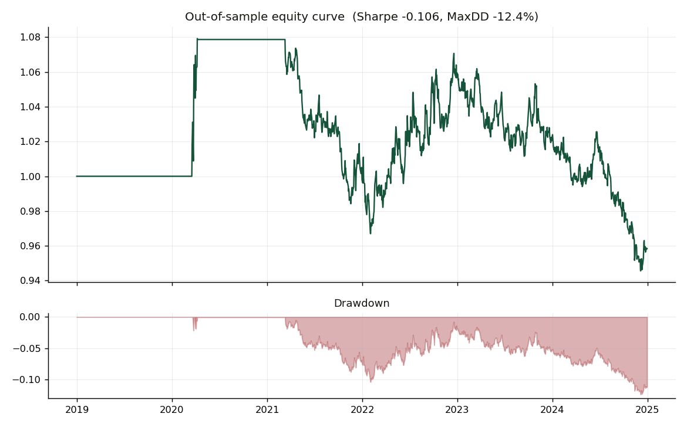

01
Cointegration & Mean-Reversion: An Out-of-Sample Reality Check
Tested whether a textbook cointegration and Ornstein–Uhlenbeck pairs strategy could survive out of sample on real ETF data (EWA/EWC). I estimated the hedge ratio with Engle–Granger (ADF) and fixed the OU parameters in sample. It did not survive: the out-of-sample Sharpe was −0.11 and remained negative at every entry threshold tested. The cause was an 83-day half-life that permitted only three trades, together with marginal cointegration and a regime change. A disciplined test of the kind that catches overfitting before any capital is at risk.

OOS Sharpe
−0.11
negative across every tested entry threshold
OU half-life
82.7 days
too slow for a practical pairs signal
OOS trades
3
low statistical power; result treated cautiously